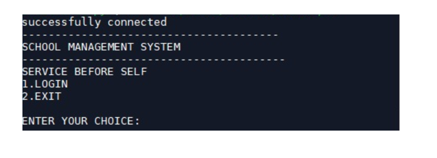
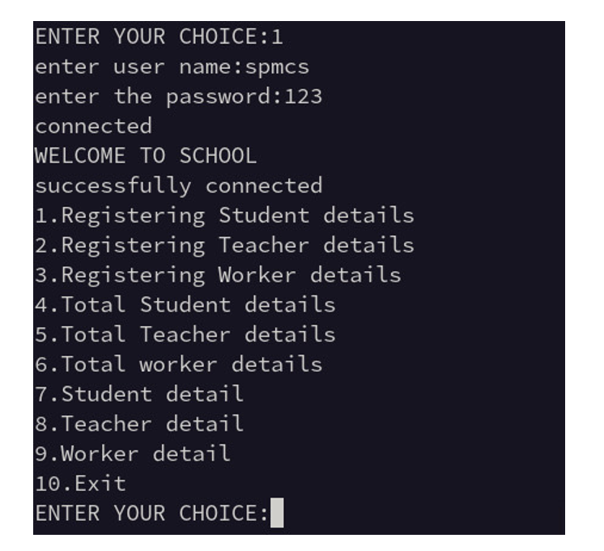
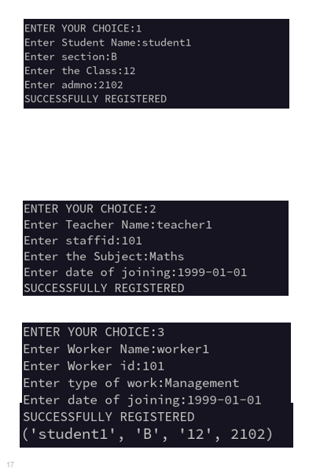
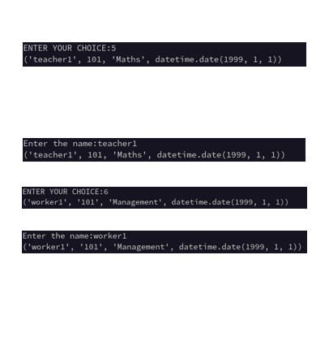

Along with two of my team mates, I made a School Management System using Python and MySQL connectivity for my 12th standard Board project which could store the information of all students, teachers and other staff of the school. We made a menu driven program using 'while' loops, If-elif statements and then connected it to the MySQL database using mysql.connector module to store the information.




I along with a team mate also participated in 'The What Factor' hackathon in Abhyantriki and made a 'Brain-rot Score calculator' which calculated your level of meme brain-rot through a quiz on memes and then returned an IQ like score.
I was the FY Representative at SMLRA(Somaiya Machine Learning Research Association ) and contributed heavily to the Creative team in making edits, posters, merch and in ideation.